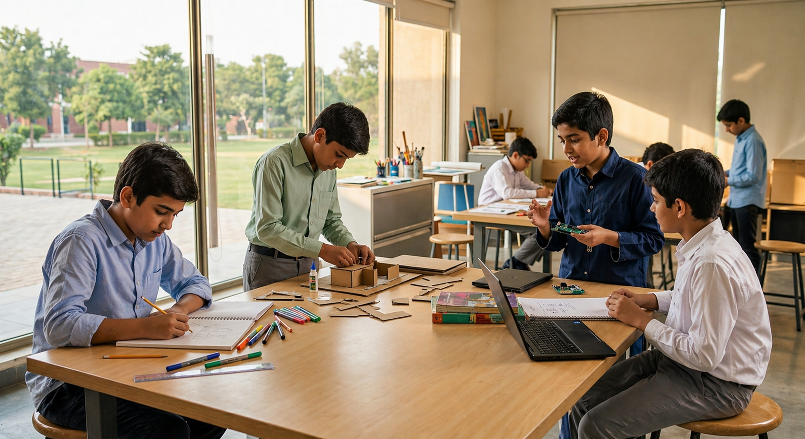

Why Project Based Learning?
Because the world doesn't reward what you remember.
It rewards what you can understand, solve, and build.
94%
of employers say critical thinking matters more than grades
Where learning breaks down
Learning is passive, not participatory
Teaching methods prioritize completion over understanding
Success is measured through marks, not thinking
Critical 21st-century skills are underdeveloped
Real-world exposure is limited or absent
Classrooms remain teacher-led, not learner-driven
Students rarely develop design or problem-solving ability
What this
leads to
over time
When traditional learning compounds over years, the effects show up later in ways that are hard to reverse.
😶
UNPREPARED
Students feel unprepared for real-world challenges
⚠️
MISMATCH
A growing gap between skills and expectations
📉
CONFIDENCE
Reduced confidence in solving unfamiliar problems
💤
UNTAPPED
Potential in thinking and creativity goes unrealised
A shift is no longer optional
Learning needs to move:
What this unlocks
01
Deep understanding, not surface recall
Students remember what they figured out themselves
02
Critical thinking and creativity
Skills that no exam can measure — but every job demands
03
Student engagement and ownership
When students own the process, they show up differently
04
Real-world connection
Every project links back to something that actually matters
05
Strengthens decision-making ability
Students develop the ability to weigh options, consider consequences, and make informed choices
06
Encourages thoughtful, informed decision-making
Every project requires students to think through decisions carefully and justify their reasoning
A different way to learn
Real-world problems
Students start with challenges from life — not textbook exercises
Student-centered
The learner is at the centre. Teacher guides, not lectures
Inquiry-led
Questions drive everything. Curiosity is the engine
TRADITIONAL LEARNING
PROJECT-BASED LEARNING
From question to understanding
Start with a real-world question or challenge
Investigate through research and exploration
Build solutions, models, or projects
Present outcomes and reflect on the process

The Genesis
Approach
to PBL
Every experience is intentional,
designed to move students forward.
Built for actual classroom and learning settings
Guided by trained mentors and facilitators
Structured implementation of Project-Based Learning
Focused on long-term learning, not short-term output